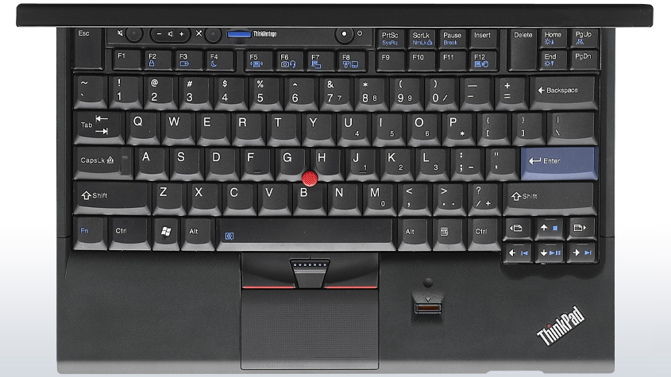
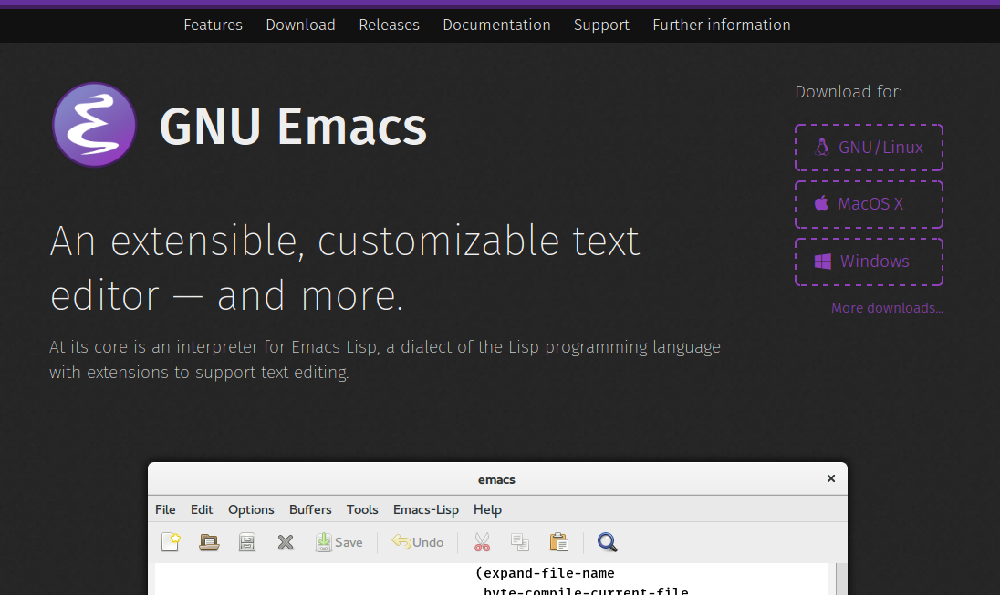
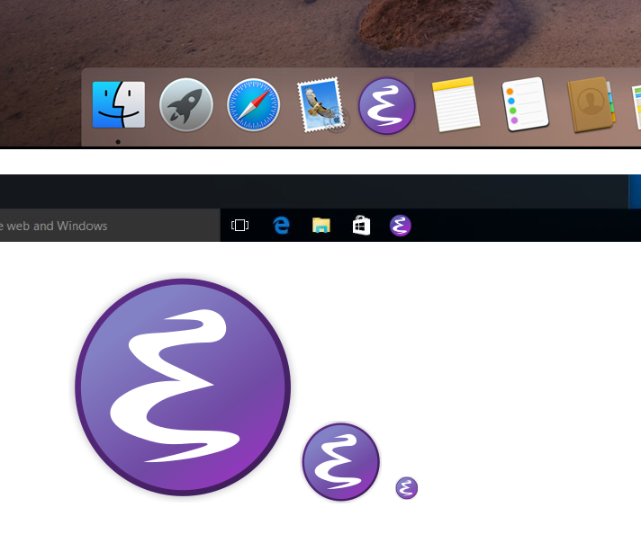
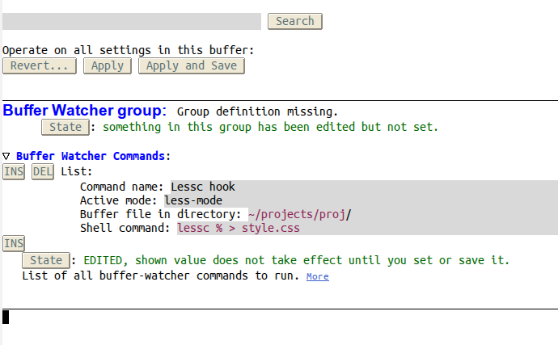
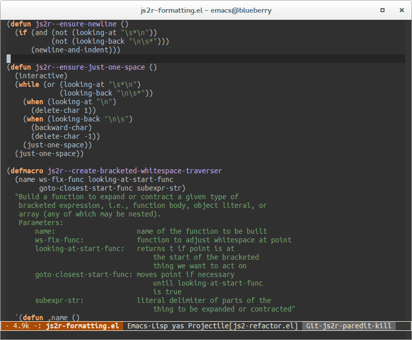
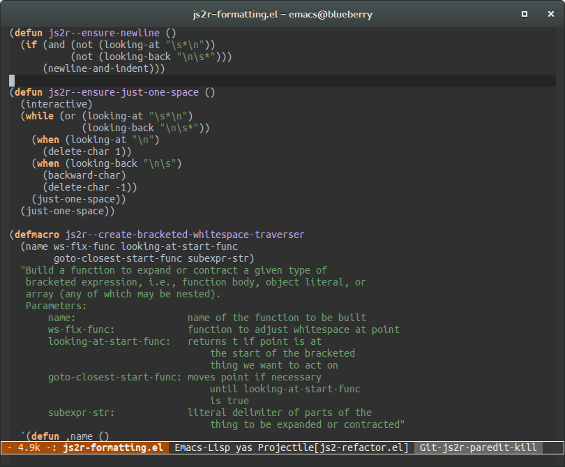

Blog posts and notes.
Interview with Damien Cassou
This is the sixth post of my series of interviews of my colleagues at FTGP.
This is my second interview of Damien, the first one was done when we were both working at Inria, in the RMoD team. Back then we shared our office together with Benjamin, another former member of RMoD now working with us!
With Damien we often hack Emacs packages, pair program and discuss nerd things like self-hosting or Free Software.
Figure 1: Damien at work
Data binding with objectjs
Objectjs is a simple object model for JavaScript, you can read more about it here.
I've been thinking for a while about adding first-class properties to it to enable data binding in widgetjs.
The idea is not new: whenever a domain object property is updated, any widget rendering that property could be updated automatically. React has been doing this for a while, but I'll explain here a slightly different approach that we took.
Going for a ThinkPad x220
Looking for the perfect secondary laptop
I've been looking for a second hand laptop to use at home and for travelling for a while, so that I wouldn't have to carry my primary laptop from and to work every day.
I've been using a ThinkPad t440s for the last 2 years, and I'm really happy with it. The keyboard - while being a chiclet keyboard - feels really good, the laptop is quite lightweight and slim for a 14 inches, and the IPS matte screen is amazing: it has very good viewing angles, a high resolution, and vibrant colors. However, I'm not happy at all with the trackpad, which lacks physical buttons, making the trackpoint pretty useless on this machine, a shame for a ThinkPad.

Figure 2: The keyboard of the ThinkPad x220
Interview with Mikael Hägerbro
This is the fifth post of my series of interviews of my colleagues at FTGP.
While writing this introduction, I realized that I have been working with Mikael for the past 6 years! Time really flies.
A simple object model in JavaScript part #2
In my previous post, I wrote about an approach to class-based OO in JavaScript. I mentioned class extensions (the ability to reopen and extend classes from the outside of the class definition) without showing how that can be done.
A simple object model in JavaScript
At Företagsplatsen we are developing a web application with a fairly large JavaScript codebase. We have been using for the past 5 years a coding style described by Douglas Crockford in his book "JavaScript, the good parts" as "functional inheritance", which looks like the following.
Interview with Seçkin Savaşçı
This is the fourth post of my series of interviews of my colleagues at FTGP.
Seçkin is the newling sofware engineer at Företagsplatsen, coming to us straight from Turkey (well, that's not entirely true, as he got his Master degree in Stockholm).
Working on the Emacs website
After working on the Emacs logo and the ELPA website, I'm now working on the Emacs website, you can have a look at my work (in progress) here!

Please note that
- It's wip
- Many links are broken
- It's not mobile device ready yet
As always, feedback welcome!
Working on the Emacs logo
Recently I've been working on a new iteration of the Emacs logo. My final goal is to improve the first experience newcomers have with Emacs, from the website to Emacs startup screen.
As a first step, I'm working on dusting off our logo, improving the current website, and designing a proper website for GNU ELPA.

Lazy sequences in Emacs with stream.el
Fourth Emacs Meetup
Last Thursday I hosted the fourth Emacs Meetup.
The plan was to have a look at how to write a major-mode, and after
some smalltalk around a beer and a slice of pizza, Anders Lindgren
made a presentation about font-lock. After that we had a close a
look at pass-mode, a major-mode for managing pass keychains.
I plan to host another meetup in August, so stay tuned!
Third Emacs Meetup
The next Emacs meetup in Stockholm is scheduled for Thursday, April 9!
This meetup will be dedicated to Orgmode. Org mode is a unique and wonderful mode for keeping notes, maintaining TODO lists, planning projects, and authoring documents with a fast and effective plain-text system.
Together we will learn how to use the main features of this mode, as well as the builtin agenda, the capturing system, and more!
I would also of course be very interested in sharing experiences and tips, so bring your laptops with you!
Interview with Louise Axhake
It's been almost six months now since I moved to Stockholm, working full-time at Företagsplatsen as a software engineer, and this is the third post of my series of interviews of my colleagues.
Louise joined the team in January. She was previously working at PwC, one of our customers. We started doing this interview on her first week in the team, and I've been working with her for a month now, which has been a lot of fun!
Emacs Meetup
Next Friday I'll be hosting the first Emacs Meetup in Stockholm at Företagsplatsen!
I have planned to show the basics of Emacs and its terminology, maybe go over the builtin tutorial, then to dive into some interesting modes and tools that can be of great help to developers. If I have enough time, I would also like to explore Emacs Lisp, at least the basics :)
I would also of course be very interested in sharing experiences and tips, so bring your laptops with you!
No Smalltalk anymore.
… at least for now!
Since I decided to step down as Amber maintainer, several colleagues and friends have asked me why I wasn't doing any Smalltalk anymore, some urging me to get back on track.
This is an attempt to explain why I'm currently not doing any Smalltalk.
Interview with Benjamin Van Ryseghem
Watching Buffers with buffer-watcher.el
buffer-watcher.el makes it easy to evaluate shell commands each time a buffer is saved in Emacs.
You can specify a mode and base path for which a specific script should be evaluated, and each time you save a buffer that matches the criteria, the hook will be run.
Here's an example that runs lessc each time a less file is saved
in the project proj:
(require 'buffer-watcher) (add-to-list 'buffer-watcher-commands '("Lessc hook" less-css-mode "~/projects/proj/" "lessc % > style.css"))
The command will be run from within the same folder as the save file,
and % is expanded to the buffer's file name.
If you're into customize, you can M-x customize-group RET
buffer-watcher to add your commands.

You can grab buffer-watcher from my emacs settings on GitHub.
Interview with Johan Degerfeldt
Two months ago I moved to Stockholm, working full-time at Företagsplatsen as a software engineer. Företagsplatsen (or FTGP for short as we call it) is a really fun IT company to work at, I really enjoy the people and the culture. Just like I did with my previous job at Inria, I decided to do another series of interviews of my colleagues at FTGP.
As the CEO of the company, it only made sense to interview Johan first. I guess Johan looks like what we imagine of a viking: tall, light hair and a beard, but he is definitely more talkative than the average Swedish guy. He's half of the time joking around and the other half really serious talking business and stuff, making him a really cool guy to work with.
Amber 0.13
Amber 0.13.1 has been released!
Amber has a new maintainer
As you have probably noticed, I've been a bit away from Amber for some time.
Herby has been the unofficial maintainer of Amber since then and he has done an amazing job!
So, after some discussions we decided to make it a bit more official, so here it is: Herbert Vojčík is the new maintainer of Amber.
It does not mean that I will totally disappear, I'll stay around!
Multi-occur on projects
Update: Damien Cassou tricked me into extracting it in a package. You can get it here: github.com/NicolasPetton/noccur.el.
Occur-mode is one of the awesome modes that come builtin with Emacs.
Sometimes I just want to run multi-occur on all (or a subdirectory)
of a project I'm working on. Used with keyboard macros it makes it a
snap to perform modifications on many buffers at once.
I wrote a tiny package containing the following functions that does just that:
(require 'projectile) (defun noccur-dired (regexp &optional nlines) "Perform `multi-occur' with REGEXP in all dired marked files. When called with a prefix argument NLINES, display NLINES lines before and after." (interactive (occur-read-primary-args)) (multi-occur (mapcar #'find-file (dired-get-marked-files)) regexp nlines)) (defun noccur-project (regexp &optional nlines) "Perform `multi-occur' in the current project files." (interactive (occur-read-primary-args)) (let* ((directory (read-directory-name "Search in directory: ")) (files (if (and directory (not (string= directory (projectile-project-root)))) (projectile-files-in-project-directory directory) (projectile-current-project-files))) (buffers (mapcar #'find-file (mapcar #'(lambda (file) (expand-file-name file (projectile-project-root))) files)))) (multi-occur buffers regexp nlines))) (provide 'noccur)
It requires projectile for the `noccur-project` function, but `noccur-dired` is very similar and doesn't require it.
The way I use it is the following:
M-x noccur-project RET foo RET then I can edit the occur buffer's
content with occur-edit-mode (bound to e). To save changes in all
modified buffer and go back to occur-mode press C-c C-c.
Dark Emacs windows in GNOME
Gnome 3's default theme Adwaita has support for both light and dark window decorations. Many media apps like Totem use the dark theme. It puts the focus on the content and it's easier on the eyes.
Emacs with a dark theme and the large white-ish window decoration isn't really a fit on my desktop, but that can be easily fixed using a bit of elisp with xprop!
(defun set-selected-frame-dark () (interactive) (let ((frame-name (get-frame-name (selected-frame)))) (call-process-shell-command (concat "xprop -f _GTK_THEME_VARIANT 8u -set _GTK_THEME_VARIANT \"dark\" -name \"" frame-name "\"")))) (if (window-system) (set-selected-frame-dark))
Here's a screenshot of both versions:
 
isearch thing
Wouldn't it be awesome if when using isearch, I could search for the symbol under the cursor, or the active region if any?
Unfortunately, AFAIK isearch can search for the next word (with C-w), but not
the symbol at point or the region contents. This small snippet fixes the
problem!
Note: it overrides C-t in isearch-mode, but as I never use it, I do not mind :)
(defun symbol-name-at-point () (let ((symbol (symbol-at-point))) (if symbol (symbol-name symbol) ""))) (defun current-thing () "Return the current \"thing\": - if the region is active, return the region's text and deactivate the mark - else return the symbol at point or the empty string." (let ((thing (if (region-active-p) (buffer-substring (region-beginning) (region-end)) (symbol-name-at-point)))) (deactivate-mark) thing)) (defun isearch-thing () "Search for the current \"thing\": - if the region is active, return the region's text and deactivate the mark - else return the symbol at point or the empty string." (interactive) (isearch-yank-string (current-thing))) (define-key isearch-mode-map (kbd "C-t") #'isearch-thing)
Farewell RMoD!
Today is my last day at RMoD.
The last two years have been an incredibly rich experience, and I'm profoundly sad to leave my colleagues. I have in the past two years met and worked with a lot of very smart people and many of them became very close friends. I'm still saying goodbye to people, so I'll make this post short. :)
The first thing that comes to my mind when I think about the last two years is that I'm very proud of having been part of RMoD. It hasn't always been easy, but it has been all in all a very joyful experience.
I will of course stay around, and come back to visit the team around February next year.
In two weeks I'll be packing my stuff to go to Stockholm, where I will be working in another development team. It's a totally new adventure that will begin, so stay tuned!
Interview with Clara Allende
This is the sixth post of my series of interviews, in which I interview my colleagues of the RMoD team.
Clara joined RMoD recently for an internship in the team. I first met her in Argentina for the Smalltalks conference last year, where we had a couple (well, a bit more than that) beers together with other argentinians, talked about Smalltalk among other things. She's now a good friend of mine and I'm really happy to make this interview with her, probably my last interview of the RMoD team members, as I'm leaving the team today.
Tide & Marina at RMoD
Today I gave a presentation (probably my last one, as I will leave for Stockholm soon) about Tide and Marina to my colleagues of RMoD.
Tide is a new web framework that makes Pharo and Amber communication a breeze. Marina is the CMS that powers the new Pharo website.
Here are the slides.
tmate.io terminal sharing made easy
Recently I was looking for good remote pair programming tools, like screen sharing and audio/video tools.
For audio, Jabber and Skype work fine. I also use Google Hangout from time to time.
For screen sharing I used Teamviewer in the past, but the quality isn't always good enough to share an Emacs window, and it is a commercial application. Skype's screen sharing works fine but it's read-only sharing.
I decided to give the famous tmux a try, and stumbled upon Tmate, a tmux fork that makes terminal sharing a breeze.
The idea behind tmate is simple, it's like tmux but with sugar on
top so that you don't have to setup anything (you can setup your own
tmate server if you want though), just start tmate in a terminal
and it will handle the ssh server connection for you and give you a
one time ssh access that you can copy/paste to you mates.
It's as good as tmux: it's fast, reliable and works great in general, even with slow bandwidths. Best of all, it's free software, works on Linux and OSX. I finally have a great tool to share an Emacs session.
Amber 0.12.6
Read the announcement.
Interview with Guillermo Polito
This is the fifth post of my series of interviews, in which I interview my colleagues of the RMoD team. After the Interview with Jean-Baptiste Arnaud, I interview Guillermo Polito.
Guille (pronounce it Guiche) is another one of the many argentinians who have been working at Inria. Guille is doing a PhD in RMoD, he drinks mate all day long (which argentinian doesn't?), and he's always in when it comes to going for a beer somewhere in Lille after work.
Per-computer Emacs settings
I use Emacs on all of my machines, being laptops or servers. While my Emacs settings are shared among all of my computers, some of these settings really matter for one specific computer.
Interview with Jean-Baptiste Arnaud
This is the fourth post of my series of interviews, in which I interview my colleagues of the RMoD team.
This time I interview Jean-Baptiste Arnaud.
Amber test runner
Today the helios-sunit branch has been merged into master. This
is an important milestone for Helios, Amber's new IDE, as it now has
a fully functional test runner.

Figure 6: Helios' test runner
Amber 0.12.4
After 3 months of development, we are happy to announce the release of Amber 0.12.4.
Highlights:
- Several improvements in Helios, including UI-related and debugger improvements
- Loading Amber without cloning the repository has been simplified
- A new documentation (in progress) can be found at http://docs.amber-lang.net/[1]
Commits: https://github.com/amber-smalltalk/amber/compare/0.12.3...0.12.4[2]
Issues: https://github.com/amber-smalltalk/amber/issues?milestone=12&state=closed[3]
Install Amber 0.12.4 from here!
Helios as a desktop app
I just pushed on the nw-helios-app branch a working version of Helios running as a desktop app, remotely connected to an Amber app.

Figure 7: Niflheim theme
To try it yourself, you'll first need to install node-webkit then run from the `hw-helios-app` branch:
nw helios.nw
Interview with Stéphane Ducasse
This is the third post of a series, in which I interview my colleagues of the RMoD team (in Lille, France). This is the interview of Stéphane Ducasse, our leader and the backbone of RMoD.
A dark theme for Emacs

Interview with Esteban Lorenzano
This is the second post of a series, in which I interview my colleagues of the RMoD team (in Lille, France). This time I interview Esteban Lorenzano, my neighbour, colleague and friend.
Details matter
Helios is moving forward with interesting new features, especially regarding navigation in code. These improvements are for the major part small and might be seen as unimportant details. The thing is details matter! Polishing Helios is now a priority in Amber's development, and a full replacement of the old IDE is planned for one of the next releases.
Here's a short video demonstrating some of the changes I like the most.
Help us write a documentation for Amber!
There's a new website in Amber-land: docs.amber-lang.net.
We just started to extract pages from our Github wiki into a new website dedicated to Amber's documentation. It often requires rewriting and quality improvements. As the current wiki misses a lot of content and is far from covering all aspects of Amber, there's quite some work yet to be done.
You can help us make Amber a better documented language! You can contribute on github, send us pull requests, report typos and other issues or ask for for specific topics to be covered.
We need more topics covered, reviews, etc.
Interview with Damien Cassou
This is the first post of a series, in which I interview my colleagues of the RMoD team (in Lille, France), with the hope that I can share part of what it really means to work here.
RMoD A series of interviews
I have the incredible chance to work in an amazing environment, surrounded by smart and passionate people. This place is RMoD, a research team at Inria Lille.
At RMoD we not only make Pharo, Amber, work on Moose and do research. For me the work is all about the people, the energy and shared passion. A lot of the culture of the team is actually built outside of the office, during the friday evenings at Café Citoyen sharing a beer, or during other events. I'm actually proud to say that many of my colleagues became very good friends over time.
I decided to share my experiences of working there, and to do so I will start a series of interviews of the team members on my blog. My goal is not to ask technical questions about Pharo or a PhD thesis, but to share the human side of the story.
I will post the interviews as they get completed, so stay tuned!
Poll What would you like to have in future releases of Amber?
Keybindings in Amber's new IDE
Amber's new IDE, fondly named Helios, has been built with keyboard power users in mind from the beginning. It evolved quite a bit over time, and keyboard shortcuts as well as their UI are no exception.
Amber 0.12.2
This is the second minor release of Amber 0.12 (announcement), 20 days after the release of version 0.12.1.
Slides from my presentation at Smalltalks 2013
I just put online slides from my presentation of Amber at Smalltalks 2013 in Rosario.
Amber 0.12.0
The last 3 months have been exciting in Amber-land!
The new release includes a lot of improvements, from the new package management to the AST interpreter, as well as improvements in Helios, the CLI tools and the compiler, among other changes.
Amber's new compiler
Amber's compiler has been improved some months ago and a post explaining its new architecture was a long overdue.
Following Opal (the new Pharo compiler) architecture, the compiler has been entirely rewritten from a single, complex and stateful AST visitor into several smaller, single-purpose classes, making it a more flexible and extensible compiler.
Arrived in Buenos Aires
Yesterday I arrived in Buenos Aires.
Next week I'll be heading to Rosario for the Smalltalks conference where I'll be giving a talk about Amber. This talk will highlight key features and use-cases of Amber, explain some of the internals as well as important new and planned features.
I hope to see you there!
Installing Pharo on Ubuntu
I'm always surprised when I see that people are still installing the Pharo Virtual Machine by hand on Ubuntu while Damien Cassou has made a ppa for it.
Blogging with org-mode
I just switched my personal website and blog engine from Jekyll to
Org-mode. As all my blog posts were already written in the
org-mode format, switching was a breeze. Org-mode includes a RSS
exporter in the contrib directory and together with its HTML
publishing features, it makes it a very powerful website builder.
Amber 0.10.0
Today we released Amber 0.10.0. After a year of work, we beleive this is a great release. I'm especially glad to say that this release was a real community effort.
Read the full announcement.